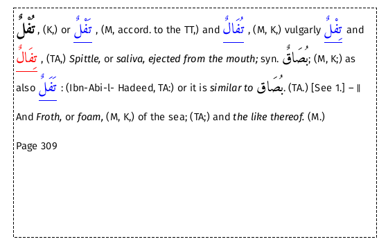

This section contains a brief overview of the XML structure of a Lexicon entry.
For users familiar with XSLT, the distributed stylesheet contains comments that may be of assistance.
The XML structure of a Lexicon entry is illustrated using the following example:

To view this entry search for node 3972.
<word buck="tufolN" ar="تُفْل" page="309" itype="" supp="0">
<entryFree id="n3972" key="تُفْل" type="main">
<form>
<orth orig="" extent="full" lang="ar">تُفْل</orth>
<orth extent="full" lang="ar">فا</orth>
<orth extent="full" lang="ar">ف</orth>
<orth extent="full" lang="ar">فل</orth>
<orth extent="full" lang="ar">تف</orth>
</form>, (K,) or
<foreign lang="ar">
<ref cref="n3972-1" target="تَفْل" n="1" type="1" subtype="WO" lang="ar" select="n3971"/>
</foreign>, (M, accord. to the TT,) and
<foreign lang="ar">
<ref cref="n3972-2" target="تُفَال" n="2" type="1" subtype="WO" lang="ar" select="n3976"/>
</foreign>, (M, K,) vulgarly
<foreign lang="ar">
<ref cref="n3972-3" target="تِفْل" n="3" type="1" subtype="WO" lang="ar" select="n3973"/>
</foreign> and
<foreign lang="ar">
<ref cref="n3972-4" target="تِفَال" n="4" type="1" subtype="WO" lang="ar"/>
</foreign>, (TA,) <hi rend="ital">Spittle,</hi> or <hi rend="ital">saliva, ejected from the mouth;</hi> syn. <foreign lang="ar">بُصَاق</foreign>; (M, K;) as also
<foreign lang="ar">
<ref cref="n3972-5" target="تَفَل" n="5" type="1" subtype="WO" lang="ar" select="n3974"/>
</foreign>: (Ibn-Abi-l- Hadeed, TA:) or it is <hi rend="ital">similar to</hi>
<foreign lang="ar">بُصَا</foreign>. (TA.) [See 1.] ―
<sense type="b" n="2">-b2-</sense> And <hi rend="ital">Froth,</hi> or <hi rend="ital">foam,</hi> (M, K,) of the sea; (TA;) and <hi rend="ital">the like thereof.</hi> (M.)
<pb n="309"/>
</entryFree>
</word>
It should be noted that the surrounding <word> tags are not stored in the database but are inserted as the entry is loaded. The XSLT stylesheet expects these tags to be present.
<word>
Most of the attributes are informational only whose meaning should be clear.
"supp" value of 1 indicates the entry is from the supplement
Root entries are identified by
"type" attribute with a value of "root"
"quasi" is also present for roots described as "Quasi"
<form> ignored
<ref> Cross reference. These are converted to links.
the presence of a "select" attribute indicates that the destination of the cross-reference has been
identifed and the value of the attribute is the target node.
<sense> sense separator
The "type" attribute has two values:
a denotes "an extraordinary, or a complete, dissociation."
b "to denote a break in the relations of significations"
<pb> Page break.